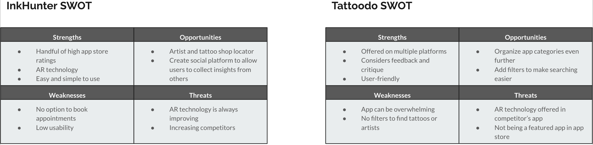

InkTank
InkTank was a single person project completed as part of CareerFoundry’s UX Immersion course. The intent of the project and curriculum were to fully immerse the student in the UX Design process. This included learning all the skills, tools and processes of a UX Designer and to apply them while completing a design project from start to finish within the context of building a responsive app. InkTank is a mobile application used to help people in their tattoo decision process. The application is designed for people who are interested in getting tattoos or people who already have tattoos. Some features the application includes are browsing images and artists, locating nearby tattoo shops as well as searching for tattoo designs. The process included creating a competitive analysis, interviewing potential users to gain insight, creating user personas, then creating low- to mid- to high-fidelity wireframes to get to the final prototype.
The Design Process
Understand

Problem Statement
Our users need a way to explore inspiration for tattoo designs based on personal preferences like artist and style because getting a tattoo is an incredibly personal experience that lasts, whether seen or unseen by others, a lifetime.
Potential Solutions
We believe that creating an app that will help users in their tattoo decision process will decrease the stress of deciding on what tatoo the user wants, the sress of finding the right artist for them, and any regret the user may develop overtime. The tattoo app will be photo-concentrated and will also include a map to help the user find their right artist and tattoo shop location(s). This app will help inspire people, help them make well-informed decisions, and find the perfect artist match for the user.
Competitive Analysis
To understand the current market, a competitive analysis was conducted. The two competitors we used to compare were INKHUNTER and Tattoodo. The Competitive Analysis provided an informative insight about the already existing competitors on the market, as well served as the basis for setting up user stories.
Research
User interviews were conducted to gain a better understanding of the user’s needs and goals, their pain points, and any current applications they are using for their tattoo decision process.
Objective
To gain insights into the wants of users to better understand how people decide on moving forward in the tattoo decision process and where they find their inspiration for their next tattoo.
Research Goals
- To learn how people decide on finally getting a tattoo.
- To learn how people explore inspiration for tattoos.
- To better understand how people decide on which artist is right for them.
User Flow example
Sitemap
Wireframes
Low-Fidelity Prototype
Mid-Fidelity Prototypes
High-Fidelity Prototypes
Usability Test Insights
- Continue to create the other screens to make a fully functional prototype.
- Learn how to make the Onboarding screens a swipe motion as most users felt the Next and Previous buttons to be redundant.
- Relook at the Search screen and see where adjustments can be made to get rid of unnecessary white space.
- Review text size is consistent throughout the app.
- Possibly add a call icon on the Search Results screen.